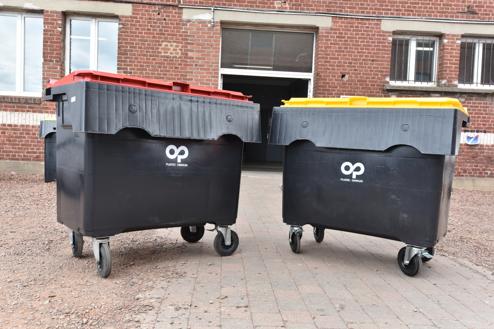

En effet, sur la base de la compétence de la Communauté d’Agglomération de Lens-Liévin en matière de collecte et de gestion des déchets et assimilés et conformément à la réglementation en vigueur1, le volume maximum de déchets ménagers et assimilés pris en charge par la collectivité est de 1320 litres par semaine pour chaque EAM, ce qui correspond à un conteneur de 660 litres collecté deux fois par semaine.
Ainsi, les entreprises, commerces et établissements produisant plus de 1320 litres de déchets par semaine devront se rapprocher d’opérateurs privés pour la prise en charge de ces derniers.
La Conteneurisation des déchets devient obligatoire pour les EAM
Pour tous les établissements concernés, la conteneurisation des déchets ménagers et assimilés est rendue obligatoire. La fourniture des conteneurs auprès de sociétés de leur choix reste à la charge des producteurs de déchets. Cette mesure répond à des exigences sanitaires, sécuritaires et environnementales2.

Par ailleurs, le prestataire de collecte de la CALL n’étant pas autorisé à pénétrer dans l’enceinte des établissements publics ou privés, les conteneurs devront être présentés en bordure de voirie. Après la collecte, les conteneurs devront être rentrés impérativement par leur propriétaire.
Ces modifications seront effectives à partir du 1er juillet 2018.
1 Ces dispositions sont reprises aux Articles 3 et 14 du Règlement de collecte des déchets ménagers et assimilés produits sur le territoire, tel que voté par les élus communautaires le 21 mars 2017. Le gisement de 1320 litres s’apprécie de manière globale, pour l’ensemble des déchets produits.
2 En effet, en application de la Recommandation R437 de la Caisse nationale de l’assurance maladie des travailleurs salariés (CNAMTS), instaurant sur le terrain des principes de prévention en ce qui concerne la santé et la sécurité des personnels, la conteneurisation sera obligatoire pour l’ensemble des déchets ménagers assimilés produits par les EAM à compter du 1er juillet 2018. Cette mesure vise également à contribuer à la propreté des espaces publics.
Vous êtes un professionnel ?
Retour à la page actualités